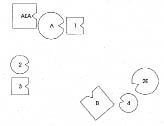
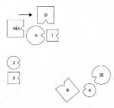
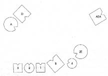
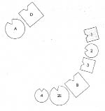
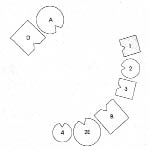
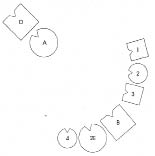

Dizim: Oğul annenin erkek kardeşini temsil ediyor
HARTMUT Her şeyden önce aile ilişkilerine yoğunlaşmaya doğru atılmak zorundayım şimdi. İsmim Hartmut. Girişim danışmanıyım ve eğitimimi tamamladığım alan olan din felsefesinde bilimsel çalışmalarımı sürdürüyorum. İlk evliliğimden iki kızım var. Bir kez daha evlendim. Hâlâ aynı kadınla evliyim ama yedi yıldır ayrı yaşıyoruz. İlk evliliğimden olan kızlarım otuz ve yirmi yedi yaşlarında.
HELLINGER Peki burada ne yapmak istiyorsun?
HARTMUT Her tür insan ilişkisine ne kadar girmem gerektiği konusunda açıklık kazanmak istiyorum. Fazla münzevi oldum, bunun beni kayba uğrattığını hissediyorum. Büyük bir sevgi var yüreğimde ama bununla ne yapacağımı bilemiyorum.
HELLINGER Senin köken aileni dizelim şimdi. Daha önce aile dizimi yaptın mı? Nasıl olduğunu biliyor musun?
HARTMUT Belirli kalıplara göre yapmadım henüz, ama kafamda bir iskelet var.
HELLINGER Bu iskelet kesinlikle yanlıştır. Yalnızca savunmaya yarar. Önceden bir şeyler hazırlayan, savunmaya hizmet eder. Terapiste sorunlarından söz eden de savunmaya çalışır. Kişi ancak eyleme geçtiğinde iş ciddileşir. Pekâlâ, babanı kim temsil edebilir?
HARTMUT Robert edebilir, çünkü…
HELLINGER Neden belirtmene gerek yok. Kaç kardeşin var?
HARTMUT İki kardeşim, bir de üvey kız kardeşim var.. Bu nedenle duraksadım. Üvey kız kardeşimle birlikte büyümedik.
HELLINGER Üvey kız kardeşin kimden?
HARTMUT Babamdan.
HELLINGER Daha önce evli miymiş?
HARTMUT Hayır, sonradan. Boşandıktan sonra bir kez daha evlendi. Üvey bir kız kardeşim daha oldu. Annem bir daha evlenmedi.
HELLINGER Ana babanın ilk çocuğu kim?
HARTMUT Benim.
HELLINGER Annen ya da baban daha önceden evlenmiş, nişanlanmış ya da sürekli bir ilişki yaşamış mı?
HARTMUT Hayır. Ama annemin başka bir talibi varmış. Sonradan benim vaftiz babam olmuş.
HELLINGER Ona burada ihtiyacımız var. Önemli olabilecek başka birisi daha var mı?
HARTMUT Çok önemli olan, dayım.
HELLINGER Ne olmuş ona?
HARTMUT Annem her zaman onunla birlikte yaşamak istedi, beni de ona benzetmek istedi.
HELLINGER Rahip filan mı?
HARTMUT Hayır, ünlü bir oyuncuydu.
HELLINGER Onunla birlikte mi yaşamak istedi annen?
HARTMUT Aslında onu babama tercih etti.
HELLINGER Onu daha sonra alalım. Önce babayı, anneyi, kardeşleri, babanın ikinci karısını, üvey kız kardeşi ve annenin erkek arkadaşını dizelim. Bunların her biri için gruptan bir kişi seç: Erkekler ya da erkek çocuklar için erkekleri, kadınlar ya da kız çocuklar için de kadınları. Sonra onları birbirleriyle ilişkilerine göre diz ve bütünüyle dizerkenki hissedişini izle. Sözgelimi anne babadan ne kadar uzakta duruyor, hangi yöne bakıyor. Konuşmadan, açıklama yapmadan herkesi yerlerine yerleştir. Ve bunu yoğunlaşmış ve ciddi bir şekilde yap, yoksa olmaz.
Not: Şekillerde erkekler dörtgen, kadınlar daire içinde gösterilmiştir. Örnek:

Dizimi yapan, ya da dizimin kendisi için yapıldığı kişiler koyu renkle gösteriliyor. Çentikler bakış yönünü gösteriyor. Şekilleri izleyen sorular ayrıca belirtilmedikçe dizilen kişilerin temsilcilerine yöneltiliyor. Bundan dolayı temsilciler her zaman temsil ettikleri kişiler adına konuşuyorlar.
Hartmut ailesini dizer.
HELLINGER Şimdi bir kez daha etraflarından dolaş ve gerekiyorsa düzeltme yap. Sonra da iyi görebileceğin bir yere otur.
1. Resim

B Baba
A Anne
1 İlk çocuk, oğul (=Hartmut)
2 İkinci çocuk, kız
3 Üçüncü çocuk, oğul
2E Babanın ikinci eşi
4 İkinci eşten olan dördüncü çocuk
AEA Annenin erkek arkadaşı
HELLINGER Baba nasıl?
BABA Burada kendimi çok uzak hissediyorum. İlk ailem çok uzakta. Sırtımda, göremediğim bir şeyin varlığını hissediyorum.
HELLINGER Anne nasıl?
ANNE Erkek arkadaşımla temasım var. Daha önce donup kalmıştım.
HELLINGER Nasıl bir duygu veriyor bu?
ANNE Güçsüzlük, harekete geçememek.
HELLINGER Sevgiliye, Hartmut’un vaftiz babasına karşı duygusu nasıl?
ANNE Arkamda duruyor ama aynı anda ensemde oturuyor. Duygularım karışık.
HELLINGER Annenin erkek arkadaşı nasıl?
ANNENİN ERKEK ARKADAŞI Aynı şey benim için de geçerli; karmaşa içinde. Kadını çekici ve sevimli buluyorum, onunla aramda bir ilişki de var. Ama bu çerçevede bu hoşuma gitmiyor. Kendimi hareketsiz, çakılıp kalmış hissediyorum.
HELLINGER En büyük oğul nasıl?
İLK ÇOCUK Buraya yerleştirildiğimde aklıma “Hu!” sözcüğü geldi. Sanki birisi tuhaf bir şekilde baldırımı kapacak diye düşündüm. Baldırım çok ısındı. Bir köpeğin ısırmasına da benziyor. Sıcak ama tehlikeli de. Babaya karşı belli bir sıcaklık var ama yanından geçip gidiyor bu duygu. Arkamdaki kardeşlerle aramda hemen hiçbir ilişki yok. Babanın ikinci karısı ve üvey kız kardeş benim için önemsiz.
HELLINGER İkinci çocuk nasıl?
İKİNCİ ÇOCUK Anne benim yanımdayken iyiydim, artık o kadar iyi değilim.
HELLINGER Üçüncü çocuk nasıl?
ÜÇÜNCÜ ÇOCUK Annemle babam görüş alanım içinde ama karar veremiyorum. Babama doğru çekiliyor ama buradan ayrılamıyorum.
HELLINGER İkinci eş nasıl?
İKİNCİ EŞ Kocamın neden bana doğru dönmediğini soruyorum kendime.
HELLINGER Üvey kız kardeş nasıl?
DÖRDÜNCÜ ÇOCUK Önce kendimi dışarıda hissettim, babayı da tehditkâr. Anne arkamda durduğundan beri daha iyiyim. Ama baba yolumu kesiyor.
İLK ÇOCUK Burada böyle dururken ön tarafımda sanki elektrik yüklenmişim gibi bir sıcaklık hissediyorum, bir şeyi kapmak istiyorum.
HELLINGER Hartmut’a Şimdi dayını dizime ekle!
2. Resim

HELLINGER İlk oğulda ne değişti?
İLK ÇOCUK Solumda bir şey çekiyor, bunun ne olduğunu soruyorum kendime. Orada ne yapıyor?
HELLINGER Daha mı iyi, daha mı kötü?
İLK ÇOCUK Daha önce sahip olduğum güç şimdi sol tarafıma doğru benden uzaklaşıyor. Beni parçalıyor. Olmuyor. Gücün az bir kısmı babaya doğru gidiyor. Arka taraf yüklü, sol taraftan bir kısmı gidiyor.
HELLINGER Annenin erkek kardeşi nasıl?
DAYI Burada ne işim olduğunu bilmiyorum.
HELLINGER Anne şimdi nasıl?
ANNE Kendimi daralmış hissediyorum.
HELLINGER Hem de nasıl!!!
ANNE Evet. Güler.
HELLINGER Hartmut’a Oyuncu evli miydi?
HARTMUT Hayır, ama öleli çok oldu.
Hellinger resmi değiştirir.
3. Resim

HELLINGER İkinci eş şimdi nasıl?
İKİNCİ EŞ Herkesin öyle dizili olmasını iyi hissettiğimi fark ediyorum. Böyle doğru olduğunu hissediyorum.
HELLINGER En büyük oğul nasıl? Daha mı iyi, daha mı kötü?
İLK ÇOCUK Birden her şey açıklığa kavuştu burada. Burası iyi bir yer.
HELLINGER Baba nasıl?
BABA Artık şimdiki aileme yönelebilirim.
Hellinger resmi değiştirir. Annenin erkek arkadaşı artık herhangi bir rol oynamadığı için yerine oturabilir.
4. Resim

HELLINGER Baba için böylesi nasıl?
BABA Böyle çok iyiyim. İlk karıma rahatça bakabiliyorum. Onunla aramdaki başarısız bir deneydi. Yeni bağlantı benim için uyumlu. Çocuklarımın bu kadar yakın olmasını da iyi buluyorum.
HELLINGER Üçüncü çocuk nasıl?
ÜÇÜNCÜ ÇOCUK Annemle daha fazla ilişki içinde olmak isterdim.
HELLINGER Kız nasıl?
İKİNCİ ÇOCUK Burada, halka içinde iyiyim.
HELLINGER En büyük oğul nasıl?
İLK ÇOCUK İyi, güzel. Üvey kız kardeşimle annesi de birden herkese katıldı. Annemin gitmesine itirazım yok.
HELLINGER Ya anne şimdi nasıl?
ANNE Çocuklarıma bakmayı isterdim.
HELLINGER Kardeşi nasıl?
DAYI Burada kendimi çok iyi hissediyorum. İçimden bir şey yapmak geliyor.
HELLINGER Hartmut’a, Bu dizime ne diyorsun?
HARTMUT Fiili durum benim için tanınmaz hale geldi tabii. Ama amaç da bu değildi. Çocuklar da işin içinde olmuş olsa işe yarayacak bir çözüm olurdu. Ama bu çözüm olmadı. O nedenle benim için biraz ütopik.
HELLINGER Yorumlar çoğu zaman çözümü sorgulayıp engellemeye yarar. Ben yalnızca bunu böyle gördüğünde kendini nasıl hissettiğini bilmek istedim.
HARTMUT Hayranlık uyandırmıyor. Böyle olmamasına yazık duygusu. Aslında susmam gerekirdi.
Hellinger annenin erkek kardeşini yeniden aileye doğru çevirir. Çocuklarına daha yakın olabilmesi için anneyi de erkek kardeşinin sol tarafına yerleştirir.
5. Resim

HELLINGER Temsilcilere Böylesi daha mı iyi, daha mı kötü?
İLK ÇOCUK Daha sıcak.
İKİNCİ ÇOCUK Daha kötü.
HELLİNGER Anne için nasıl?
ANNE Benim için daha iyi.
ANNENİN ERKEK KARDEŞİ Benim için de.
HELLINGER Gruba Bu kadın kocasını aldattı.
Annenin temsilcisi güler.
Kocasını aldattı, çünkü onu istemiyordu. Bu nedenle arkasını dönmek zorunda. O yöne doğru bakma hakkını kaybetti.
Hellinger anne ve erkek kardeşini yeniden çevirir ve anneyi kardeşinin arkasına yerleştirir.
6. Resim

HELLINGER Temsilcilere Böyle nasıl?
ANNE Böyle tamam.
HELLINGER Doğru. Şimdi Hartmut’un kiminle özdeşleştiğini görebilirsiniz. Anne şimdi erkek kardeşiyle, tıpkı daha önce ilk oğluyla varolan ilişki içinde. Hartmut bu kardeşle özdeşleşmiş.
İLK ÇOCUK Sırtımdan aşağı bir soğukluk iniyor ve içimden “Zavallı anne!” cümlesi geliyor.
HELLINGER Gruba Bu ailede, kocanın ve çocukların, üzerinde etkili olamadıkları bir dram yaşanıyor. Bunun neden böyle yaşandığını bilmiyoruz. Buna müdahale edemeyiz. Bırakmak zorundayız. Hartmut için tek çözüm, babasının yanında durması.
HELLINGER Hartmut’a Dizimde kendi yerine geçmek ister misin?
HARTMUT Evet.
Hartmut aile resminde kendi yerini alır.
HELLINGER Şimdi yolunda. Sana buna karşı nasıl davranılacağını söylemek istiyorum şimdi. İçinde ailenin bir resmini taşıyordun, sözcüğün tam anlamıyla çılgın bir resmini. Dizimi demin böyle çılgınca yaptın. Buna bir düzen getirdim. Eğer kullanmak istersen şimdi bir şansın var; bu yeni resmi içine alabilir, eskisinin etkisini yenisiyle ortadan kaldırabilirsin. O zaman da başkası ve durum değişmeksizin sen dönüşmüş bir insan olursun. Değiştin, çünkü içinde düzenin bir resmini taşıyorsun. Ve böylece şimdiki ailene bambaşka bir şekilde yönelebilirsin. Çünkü annenin babandan daha çok sevdiği birisiyle özdeşleştiğin önceki konumunda hiçbir kadın seni tutamazdı, ne de sen herhangi bir kadını tutabilirdin. Anlıyor musun? -Pekâlâ, bu kadar.